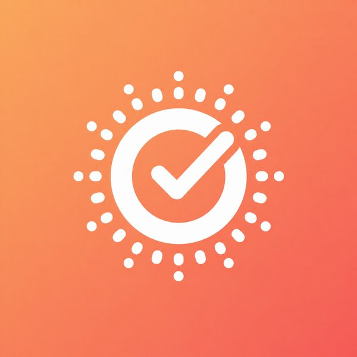
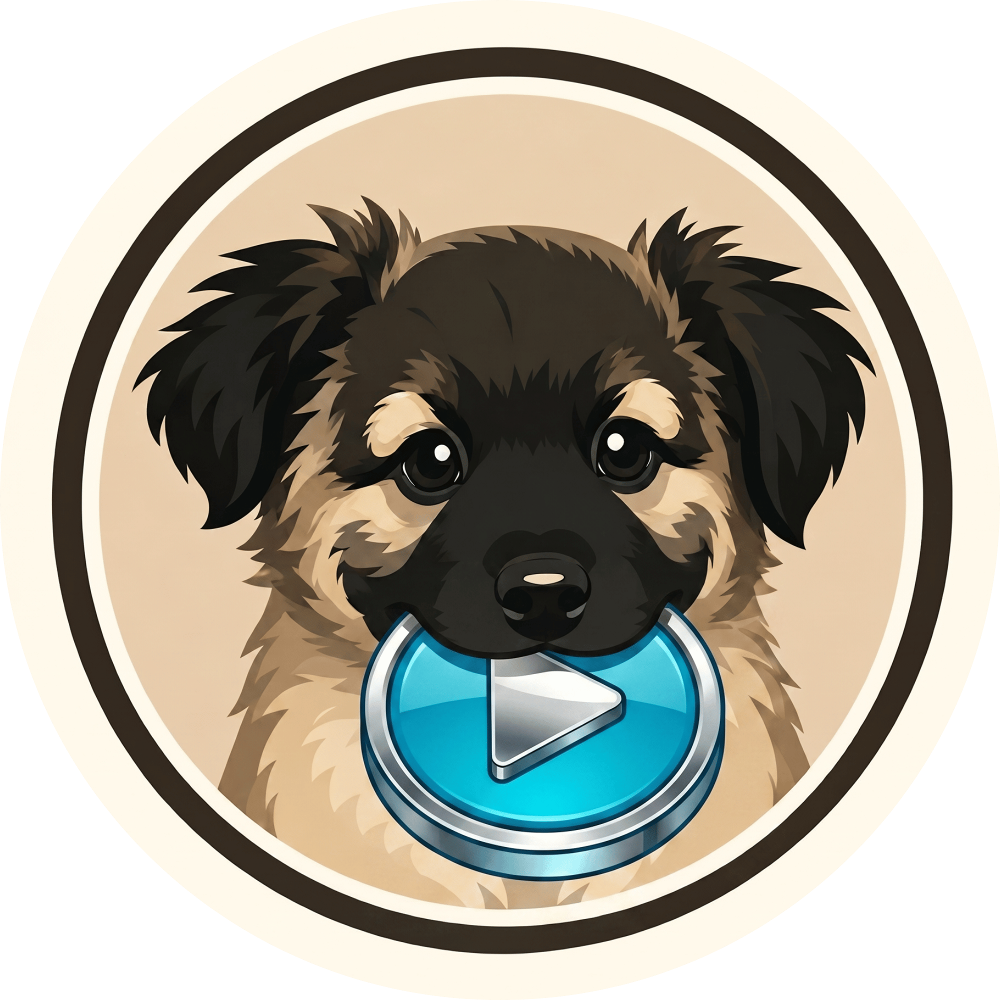

CCNA: Introducción a las Redes
Cisco Networking Academy
Estudiante de Ingeniería en Sistemas en la Universidad Kuepa, México. Lo último que construí: un editor de subtítulos con IA offline, un visor de capturadora de baja latencia y una app de recordatorios sin distracciones.
Ver proyectos →01-sobre-mi

Estudio Ingeniería en Sistemas en la Universidad Kuepa, en México. Mi enfoque está en el desarrollo web: diseñar y construir sitios usables, claros y bien ejecutados.
He completado certificaciones en distintas áreas del desarrollo y la tecnología. Hasta ahora he publicado tres aplicaciones. Ofrezco a mis clientes soluciones tanto en web como en escritorio.
02-certificaciones
Certificaciones obtenidas a lo largo de mi formación. Cada una representa una habilidad o área que he estudiado y aplicado.
Cisco Networking Academy
Instituto Nacional de Formación Profesional (INFOP VIRTUAL)
Universidad Kuepa
FUNADEH, Fundación Nacional para el desarrollo de Honduras
FUNADEH, Fundación Nacional para el desarrollo de Honduras
Oracle
03-proyectos

App de tareas y recordatorios diseñada para que tu día se sienta ordenado, no abrumado. Sin anuncios, sin distracciones: sólo lo que necesitas.

Editor de subtítulos para Windows que transcribe automáticamente videos y audios con IA Whisper: completamente offline, sin enviar nada a la nube y sin API keys. Soporta formatos profesionales (SRT, VTT, ASS).
Visor de capturadora de alto rendimiento y baja latencia para PC. Juega tus consolas favoritas directamente en tu monitor con cualquier capturadora USB: sin OBS, sin configurar nada.
04-contacto
Estoy disponible para nuevos proyectos web y disponible para colaboraciones. Escríbeme y te respondo lo antes posible.
photonpounce@gmail.com